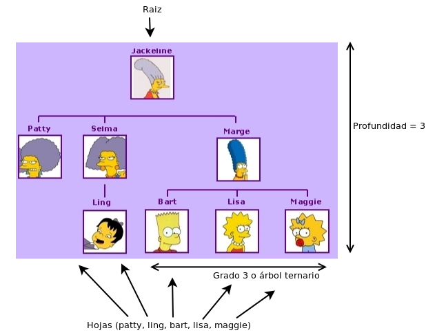
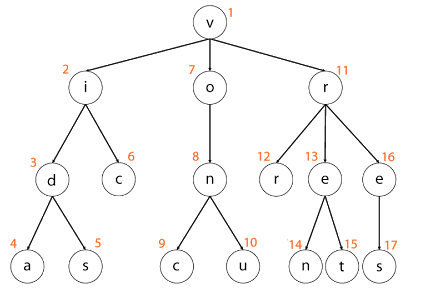
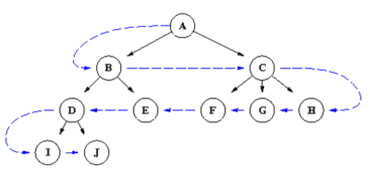

Algunas definiciones:
Un árbol es una estructura de datos enlazada que organiza elementos en forma jerárquica. Es decir, hay una relación padre/hijos.
-Cada nodo puede tener más de un hijo, pero un solo padre.
-Existe un nodo que no tiene padre denominado raiz.
-Los nodos que no tienen hijos se denominan hojas
-Un árbol es de orden N (o N-ario) cuando la máxima cantidad de hijos que puede tener un nodo es N.
-La profundidad de un árbol es la distancia (saltos entre nodos) desde la raiz hasta la hoja más lejana.

Cada rama de un árbol puede ser visto como un sub-árbol. De esta forma, el árbol genealógico de la abuela Bouvier está compuesto por el árbol de Marge, el de Patty y el de Selma. Esto repercute en el estilo de programación: todas las funciones que recorren o modifican el árbol hacen uso de características recursivas. Esto significa que a veces el término nodo y árbol se usan indistintamente, lo cual puede causar confusión al desprevenido.
Recorrer un árbol significa comenzar a visitar a cada uno de los elementos (tanto al elemento de la raiz como a los elementos de sus descendientes). A veces se realiza porque se quiere ejecutar algo por cada uno u otras veces es porque se está buscando uno en particular. Existen dos maneras de recorrer un árbol: profundidad primero y ancho primero.
Acá otro diagrama a modo esquemático:

Para poder resolver este algoritmo, es necesario retrasar la ejecución de la función sobre los hijos hasta que no se haya terminado de ejecutar todos los hermanos/primos. Por eso se usa una cola (Primero que entra, Primero que sale) para lograr esto. Cuando se visita a un nodo, ejecuta la función, agrega sus hijos a la cola, y luego llama a la función recursiva pero en lugar de hacerlo sobre algún hijo suyo (como hacía profundidad primero) lo hace sobre el próximo de la cola, que seguramente es un alguien de su nivel si aún quedan o el primero del próximo nivel.